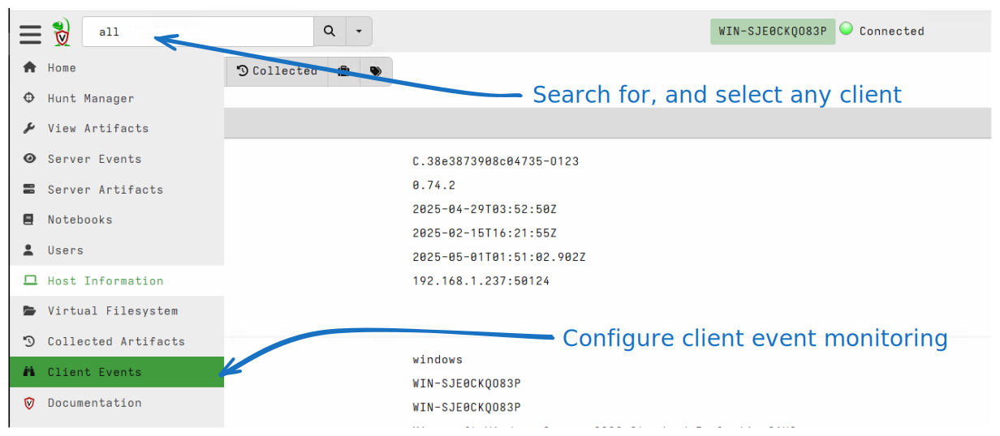
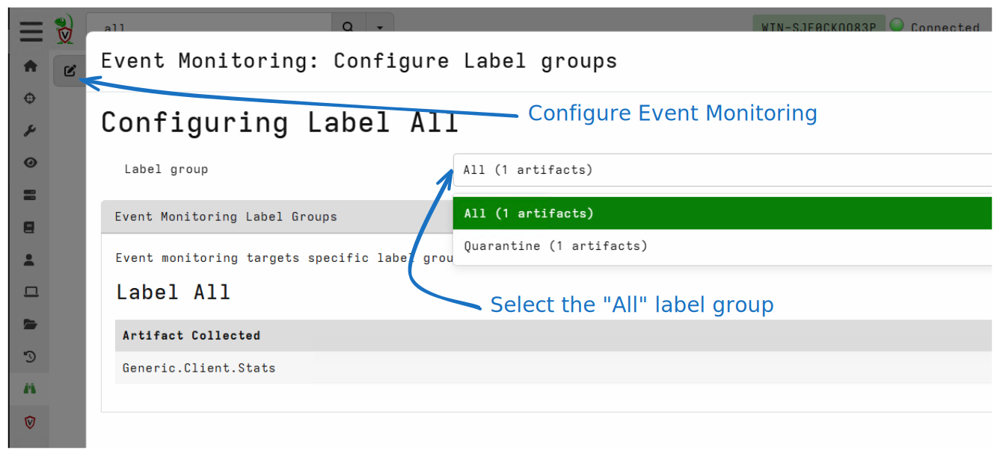
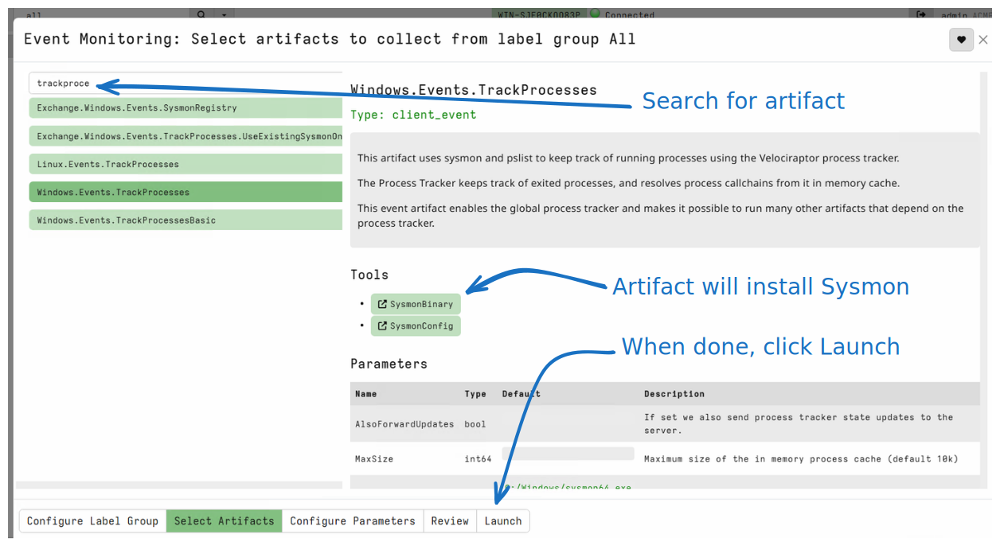
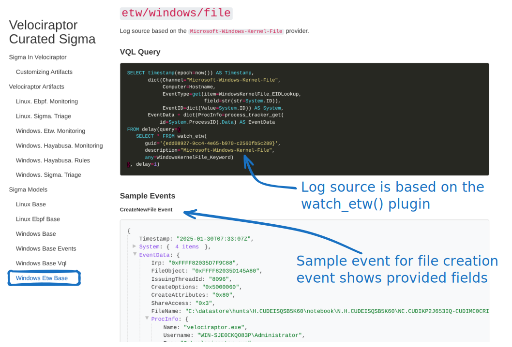
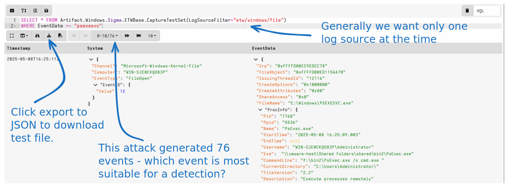
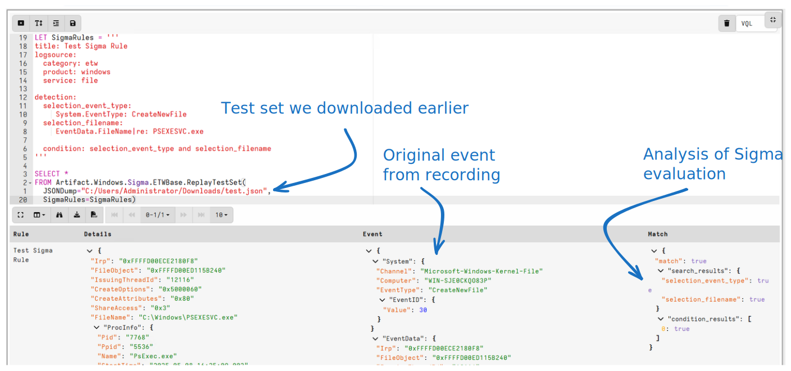

<!-- .slide: class="title" --> ## Event Tracing for Windows ### Bring in the big guns! --- <!-- .slide: class="full_screen_diagram small-font" --> ## Exercise: Preparations ### Enable the event artifact Windows.Events.TrackProcesses  ---- <!-- .slide: class="full_screen_diagram small-font" --> ## Exercise: Preparations ### Enable the event artifact Windows.Events.TrackProcesses  ---- <!-- .slide: class="full_screen_diagram small-font" --> ## Exercise: Preparations ### Enable the event artifact Windows.Events.TrackProcesses  --- <!-- .slide: class="content" --> ## Event Tracing for Windows (ETW) <div class="container small-font"> <div class="col"> * Framework Built into windows * Matches Consumers to Providers * Forms the basis of the windows event logs * Traces can be either written to file or read directly by consumers. https://docs.microsoft.com/en-us/windows-hardware/test/weg/instrumenting-your-code-with-etw </div> <div class="col"> <img src="ETW-architecture.png" style="bottom: inherit" /> </div> </div> --- <!-- .slide: class="content small-font" --> ## How does ETW work ? * Various software packages throughout the Operating System register themselves as an Event Provider using a unique GUID * As the software operates, various logging points within the code send "Events" to the provider. * The operating system simply matches consumers with providers * A consumer registers interest in a particular provider using the GUID * Note that if no consumers are interested ETW logging points are essentially free. --- <!-- .slide: class="content small-font" --> ## ETW Providers * Any software can define an ETW provider * There is no consistency - some providers are detailed - some not * Discoverability is an issue! Some providers are less documented * It is sometimes possible to infer a lot of providers from their manifest files. * There are some public efforts to better document the available providers. * https://github.com/repnz/etw-providers-docs --- <!-- .slide: class="full_screen_diagram small-font" --> ## The Windows Base ETW Model  --- <!-- .slide: class="content" --> ## The Windows Base ETW Model * Enriches events with process information * Uses the process tracker * Velociraptor does special post processing for many critical providers. * The Velociraptor Sigma Project site gives samples of events to help users write rules that target those events. --- <!-- .slide: class="content small-font" --> ## Developing Sigma Rules with the ETW Model * The ETW Sigma Model relies on live events * This makes it difficult to develop Sigma Rules for it * We need to simulate an attack on a real system * Then we need to formulate a Sigma Rule * Replay the attack and iterate * It is sometimes difficult to simulate the attack * The target system needs to be prepared exactly for the simulated attack to work. * It is not always easy to capture the raw events upon which the Sigma rules apply. --- <!-- .slide: class="full_screen_diagram small-font" --> ## The Sigma Rule Development workflow. ### Break the development cycle into two parts <img src="detection_workflow.svg" style="" /> --- <!-- .slide: class="content small-font" --> ## Exercise: Capture ETW events for PsExec Attack * The Windows ETW model includes a `CaptureTest` artifact. * Use it in a notebook to capture events during the attack ```sql SELECT * FROM Artifact.Windows.Sigma.ETWBase.CaptureTestSet(LogSourceFilter="etw/windows/file") WHERE EventData =~ "psexesvc" ``` * Now performs the PsExec attack again ``` psexec.exe /s cmd.exe ``` --- <!-- .slide: class="full_screen_diagram small-font" --> ## Exercise: Capture ETW events for PsExec Attack  --- <!-- .slide: class="full_screen_diagram small-font" --> ## Exercise: Replay ETW events for PsExec Attack  --- <!-- .slide: class="content" --> ## Sigma Rule development methodology * By splitting attack simulation from detection * We can emulate attack on any required platform * Collecting the test set can be done remotely! * Develop Sigma Rules on any other platform * Where we have Velociraptor server * Develop rules quickly and iteratively against the recorded set. --- <!-- .slide: class="content" --> ## Testing detections * One of the most important functions of Detection Engineering * Ensure no regressions! Two possibilities: 1. Sensors stop forwarding particular event types 2. Rules are not applied on events * Automated tests can be developed * On platform ensure that correct event types are generated * Continuous integration tests ensure rules are applied to recorded events. --- <!-- .slide: class="content" --> ## Recap: Event Tracing For Windows * Real time events can be read from various software components * Introspecting low level software functionality * Can write more powerful detections * In the next section we will see how to enrich these events with Forensics!